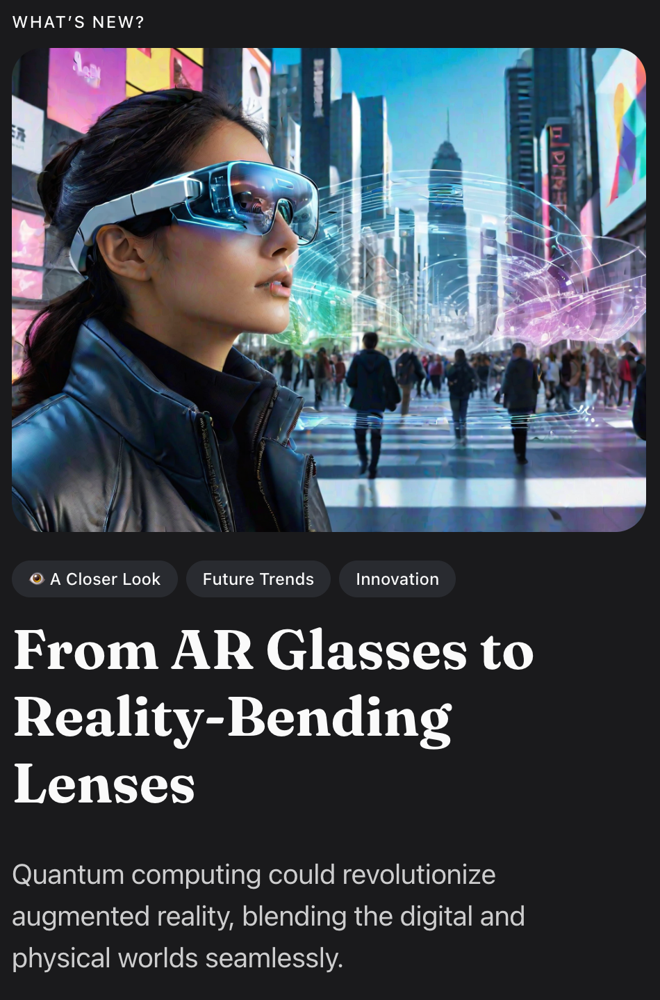

:: Now begins a story...
May I present to you, a finely curated section of a fine collection of the wonderful web we weave with a weekly roundup of bits and pieces from the far corners of the super information highway that I like to call — Token Wisdom ✨


“Good judgement comes from experience, and a lot of that comes from bad judgement.”

A curated wisdom of consumed knowledge and token allocation.
↳ February 18th 🧿 24th, 2024
📖 Table of Contents

Welcome to Token Wisdom!
Where we learn about tomorrow, today.
Welcome to the fortune of fusion with insight and innovation, where three mighty newsletters collide in a prestigious merger of mesmerizing media. As your guide to this remarkable conflux, imagine your mind as a kaleidoscopic lens through which the pulsating beats of technology, creativity, and human endeavor are refracted into a spectrum of stellar narratives. Picture, for one vibrant moment, the courtrooms of the future, iridescent with the glare of LED-lit legalities, where the echo of a gavel may well redefine AI’s creative dominion amidst the chorus of Tyler Perry’s musings and neuro-romantics dissecting the alchemy of affection.
We then twist the kaleidoscope to reveal a gestalt of genius: from the elusive Magician archetype shuffling the cards of destiny to the seismic shifts wrought by virtual currencies that nudge our cities skyward, each vignette is both a piece and a player in the game of progress. Whether it’s the dream-weaving of AR-powered quantum realms or the echo of PRINCE’s relentless rhythm, join us on a journey across a narrative quilt woven with the threads of AI-assisted enlightenment, the saga of urban sprawl, and the indomitable spirit of innovation.
In our beautifully blended bulletin, we invite you to relish the immersive experience forged by the unstoppable march of Unreal Engine’s latest marvels, and whether you’re trading quips or cryptocurrencies, ensure you're fluent in the universal language of emojis. Here, your curiosity will be both captor and catalyst as we embark on a journey sewn together by the most compelling stories from the expansive territories of governance, entertainment, and beyond—delivered with a wit as sharp as the information is keen. Get ready for an editorial adventure that's not simply news, but rather an enthralling odyssey into the heart of what makes our modern world pulse and thrive.
🎖️ A highly curated collection of humanly consumed knowledge.
✨ The Relaunch of Token Wisdom
Keeping up in this new generative mega-multi-meta-DAO-verse makes it hard to quantum all that spatial neural netting. You down with GPT? Ya, you know me. That's why I package up a small part of the internet that catches my eye, percolates my thoughts, stirs my mind, and share it with you from time to time.

🎉 Newest / Latest
100% Human Curated and Consumed Content
Unveiling the intersections of technology, creativity, and legal challenges, this document takes readers on a captivating journey through AI lawsuits, the impact of AI on entertainment, the neurobiology of love, innovative technologies, and the challenges faced by the video game industry.
#AIImpactOnEntertainment: Tyler Perry expresses concerns about the potential impact of AI on the entertainment industry, leading him to pause his $800M studio expansion plans.
#NeurobiologyOfBonding: Groundbreaking research reveals the intricate neural mechanisms involved in love and bonding, challenging assumptions about gender differences in brain activity and highlighting the surprising role of male ejaculation.
#CreativeExplorationTool: BINO mixed reality binoculars empower children to explore their surroundings with curiosity, blending the virtual and real worlds for a unique and immersive experience.
#ViceDigitalTransformation: Vice Media Group announces a strategic shift, discontinuing content publication on Vice.com and embracing a studio model, as the company adapts to the changing media landscape and explores new avenues for content distribution.
#NBAInteractiveCourt: The NBA introduces an interactive LED glass court, transforming the game into a captivating visual spectacle during the 2024 All-Star weekend.
#ChatGPTRevolution: ChatGPT, powered by GPT-4, revolutionizes AI assistance by offering unparalleled intelligence and efficiency, enhancing productivity, creativity, and decision-making processes.
#VideoGameIndustryCrisis: The video game industry faces a surge in layoffs due to a failure to anticipate a potential backslide after a period of unprecedented growth, highlighting the need for stability and long-term strategies.
#CryptoTradingPredictions: Scientists have found that analyzing emojis can lead to better predictions in crypto trading outcomes, offering insights into sentiment analysis and market trends.
#CryptoGovernanceExperiment: Meta-DAO explores the implementation of Robin Hanson's 'Futarchy' model in cryptocurrency governance, aiming to combine prediction markets and decision-making for more efficient decision outcomes.
Hope you find these articles insightful and thought-provoking. Feel free to explore each topic further and engage in discussions around the implications they present. Stay tuned for more cutting-edge updates in the weeks to come! And now it’s time for A Closer Look! But first, you might want to see how Token Wisdom breaks all this knowledge down. Click on the cat. You know you want to...

The Full Breakdown - Top 10 of the Week
100% Human Curated Collection of Content

👁️ A Closer Look
Attempts to explore a subject and share my thoughts.


A Closer Look: Explorations in Technology
Weekly essay in the areas of blockchain, artificial intelligence, extended reality, quantum computing, and all the bits and pieces.


📺 Time Well Spent
Top Ten of the Time I Spend
Exploring the cutting-edge advancements in AI, animation, mega cities, and creative industries, uncovering the transformative potential and challenges of the future.
#PRINCEWorkEthic: Explore the unparalleled work ethic of PRINCE and how it can inspire creativity and productivity with his ability to consistently create high-quality music at a rapid pace.
#AITradingBots: AI-powered trading bots have the potential to revolutionize investing but require regulation to address concerns about accuracy, fabricated facts, and potential risks to the financial industry.
#EvolutionofResponsibility: Explore the historical and cultural shifts in the concept of responsibility, from communal obligations to the rise of individual blame, and its impact on social dynamics, welfare programs, and poverty discourse.
#MagicianArchetype: Conjure the enigmatic power and timeless allure of the Magician archetype throughout history, exploring its significance as a mentor and guide bridging the gap between the spiritual and the material.
#MegaCityManagement: Leaders tackle challenges of rapid urbanization in mega cities, addressing infrastructure, inequality, and sustainability.
#BlenderAnimationRevamp: Project Backlaava introduces a revolutionary animation system in Blender, enhancing efficiency and flexibility for character animation.
#StartupCEOChallenges: Discover the critical mistakes made by startup CEOs and learn strategies for success.
#DosEquisSuccessStory: Explore how "The Most Interesting Man in the World" campaign revitalized the Dos Equis brand and became a cultural phenomenon.
#UnsettlingBrainPhenomena: Deep dive into the mysterious and unsettling phenomena of the human brain that challenge our understanding of consciousness and perception.
If you watch these ten videos, statistics have proven your IQ will go up, like, 2 points or something like that. I saw it on Perplexity.*

For a Full Breakdown of Time Well Spent
A weekly top ten list of YouTube videos that caught my attention.

✨Token Wisdom
Knowledge Transmuted
And thus, we conclude our informative journey through the rich history of the newly combined newsletter. Together, we have ventured through contemplations and pondering, across the undulating landscapes of ingenuity and intellect. Our exploration—a feast for curious minds—has served ample food for thought, garnished with both the zesty tang of controversy and the sweet relish of revelation.
Insight beckons us to recognize that, in the delicate balance between progress and conservation, each advance is carefully planned with stability in mind, though sometimes accompanied by unforeseen setbacks. As we explore the wonders of artificial intelligence, we wax lyrical about its promise, yet silently acknowledge the murmur of the crowd in trepidation of the lurking depths of uncharted waters. Every celebrated algorithmic achievement is matched by a cautious warning from those concerned about becoming obsolete and ethical complications.
While we praise technology's advancements, let's humorously question our beliefs—knowing that only the uninformed are completely certain. As we embrace the endless knowledge available online, remember to check the footnotes. They often reveal a less glorious but equally important story for our shared understanding.
In this closing verse, I tender the Token Wisdom, a narrative nugget to nourish the soul on your sojourn:
"Wisdom isn't found only in definitive answers but also in our questions. It emerges not just in our successes but also in our uncertainties. Let's integrate this wisdom into our everyday conversations and thoughts, as it's the foundation of a thoughtful society."
Let this morsel of sage wisdom be your compass, guiding you through the twilight of contemplation and into the dawn of enlightened discovery. May we part now, only to reunite in the nexus of news, narratives, and notions revived. Until our paths cross again like the stars in the constellations of discourse—remain bold, be thoughtful, and above all, be wise.

🌈💫 The Less You Know
The More You Learn
Latest Technologies
- LED Glass Court: An innovative basketball court design that incorporates LED technology to display graphics, replays, and real-time stats during games.
- Project Avalanche: Unreal Engine 5's new motion graphics tools - A project by Epic Games that aims to expand the creative possibilities of Unreal Engine 5 by introducing new motion graphics tools.
- AI Trading Bots: Automated systems that use AI algorithms to analyze market data, identify investment opportunities, and execute trades.
- Project Backlaava: A groundbreaking animation system introduced as part of Blender Animation 2025, aimed at revolutionizing character animation in Blender.
- Mega Cities: The challenges and opportunities presented by the rapid growth of mega cities, including inequality, infrastructure overload, and sustainability.
- New Animation System in Blender: A new animation system being developed for Blender to enhance efficiency and flexibility in character animation.
Most Important Topics
- Copyright Lawsuit: The legal dispute between The New York Times and OpenAI regarding alleged copyright infringement in AI development.
- Impact of AI on Entertainment Industry: Tyler Perry's concerns about the influence of AI on the entertainment industry, including potential job security implications.
- Neurobiology of Love and Bonding: Groundbreaking research uncovering the brain mechanisms involved in forming emotional bonds and their potential implications for human relationships.
- Outdoor Exploration for Children: The introduction of BINO mixed reality binoculars to encourage children to explore the real world with curiosity and creativity.
- Media Industry Transformation: Vice Media Group's strategic shift in content publication and the challenges faced by the industry in adapting to the changing media landscape.
- NBA's LED Glass Court: The introduction of an interactive LED glass court in the NBA, revolutionizing the All-Star weekend experience and enhancing fan engagement.
- Responsibility Evolution: The historical and cultural shifts in the concept of responsibility, from communal obligations to the rise of individual blame.
- Magician Archetype: The psychological exploration of the enigmatic power and influence of the Magician archetype throughout history.
Acronym
- AI: Artificial Intelligence
- MR: Mixed Reality
- LED: Light-Emitting Diode
- GPT: Generative Pre-trained Transformer
- SVG: Scalable Vector Graphics
- EU: European Union
Technical Terms
- Fair Use: A legal doctrine that allows limited use of copyrighted material without permission from the copyright holder.
- Enduring Monogamous Relationships: Long-term, exclusive partnerships between individuals, often observed in certain species such as prairie voles.
- Next Word Prediction: AI models' ability to predict the most likely next word in a sequence based on training data.
- Spatial Experiences: The perception and interaction with physical space in a three-dimensional environment.
- Vector Graphics: Images created using mathematical equations to represent lines, shapes, and colors, allowing for scalability without loss of quality.
- Non-Destructive Workflow: A workflow that allows for modifications and adjustments without permanently altering or damaging the original data.
- Procedural Rigs: Animation rigs created using algorithms and rules, allowing for dynamic and customizable character animations.
- Product-Market Fit: The degree to which a product satisfies the demands and needs of a specific market, resulting in customer satisfaction and business success.
Each of these topics represents a facet of the rapidly evolving technological landscape, offering both opportunities for advancement and challenges that need careful consideration.

Thank you for cruising by the Cult of Innovation
We’re making some Stone Soup here and if you enjoyed this amuse-bouche of news compilations in bite-sized morsels, please share with your friends and help feed a community. Mmmm. #nomnom.